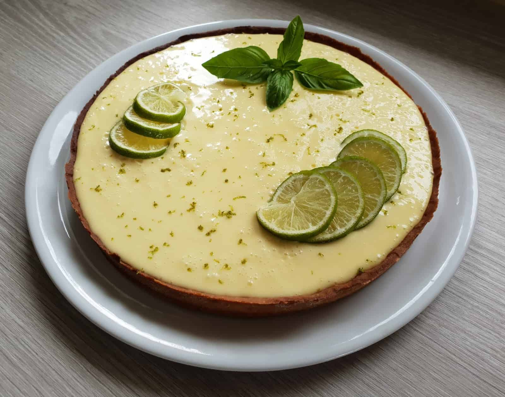

Foto de uma torta de limão.
Ingredientes
Massa
- 200g de biscoito de maizena
- 150g de margarina
Recheio
- 1 lata de leite condesado(395g)
- 1 caixa de creme de leite(200g)
- Suco de 4 limões
- Raspas de 2 limões
Cobertura
- 3 ou 4 claras de ovos
- 3 colheres (sopa) de açucar
- raspas de 2 limões para decorar
Modo de preparo
Massa:
- Triture o biscoito de maisena em um liquidificador ou processador.
- Junte a margarina e bata mais um pouco
- Despeje a massa em uma forma de fundo removível (27 cm de diâmetro)
- Com as mãos, espalhe os biscoitos triturados no fundo e nas laterais da forma, cobrindo toda área de maneira uniforme.
- Leve ao forno médio (180° C), preaquecido, por aproximadamente 10 minutos.
Recheio:
- Bata todos os ingredientes no liquidificador (exceto as raspas de limão) até obter um creme liso e firme.
- Recheie a massa já assada e leve à geladeira por 30 minutos.
Cobertura:
- Bata as claras em neve e acrescente o açúcar.
- Misture até obter um ponto de suspiro e leve ao forno até dourar.
- Desenforme a torta (sem retirar o fundo falso), despeje a cobertura e acrescente as raspas de limão.